| 2019년 07월 28일 |
인천(ICN), 상트페테르부르크 폴코보국제공항(LED) |
| 07월 29일 | 궁전 다리, 뱃머리 등대, 페트로파블롭스크 요새/성당, 그리스도 부활 성당(피의 구원 사원), 카잔 대성당, 표트로대제 기마상, 성이삭 성당 전망대 |
| 07월 30일 | 페테르부크(여름궁전), 페리, 라흐타 센터(유럽 마천루 1위), 에르미타쥐 박물관(겨울궁전), 마린스키 극장 지젤 발레 공연 |
| 07월 31일 | 삽산 기차(고속 열차), 모스크바, 볼쇼이 서커스 |
| 08월 01일 | 승리 박물관, 아르바트 거리, 구세주 그리스도 대성당, 모스크바 강 유람선(표트로 대제 기념비, 초코릿 공장, ...), 참새언덕 케이블카, 모스크바 대학, 부활의 문, 붉은 광장, 바실리 성당, 레닌의 묘, 크렘린, 굼 백화점 |
| 08월 02일 | 이즈마일로보 시장, 푸시킨 박물관(겔러리 휴무), 트레티야코프 미술관, 셰레메티예보 국제공항(SVO) | 08월 03일 | ICN |
| 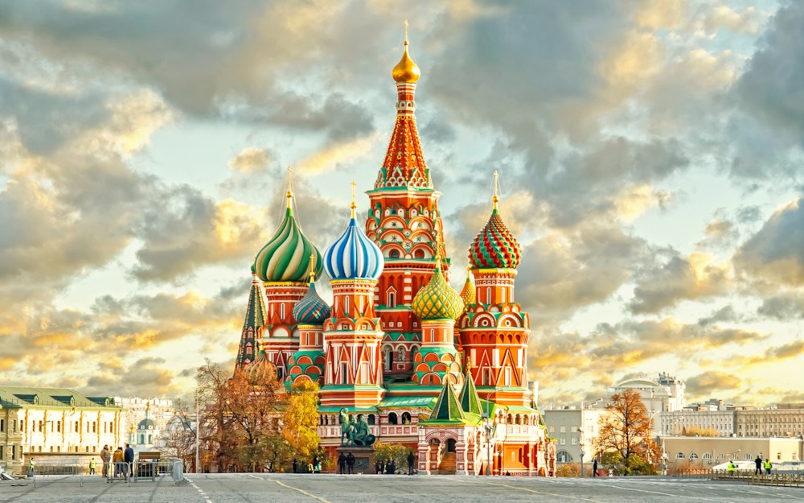 | 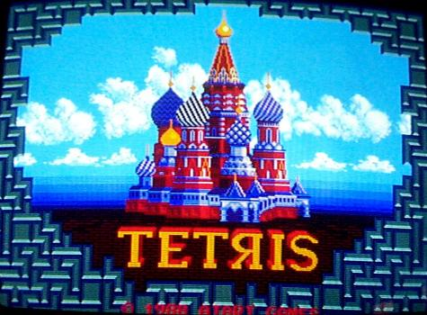 |
| 바실리 성인을 모신 성 바실리 대성당. 러시아 대표 문화유산 중 하나이며, 테트리스 게임에도 등장한다 | |
| 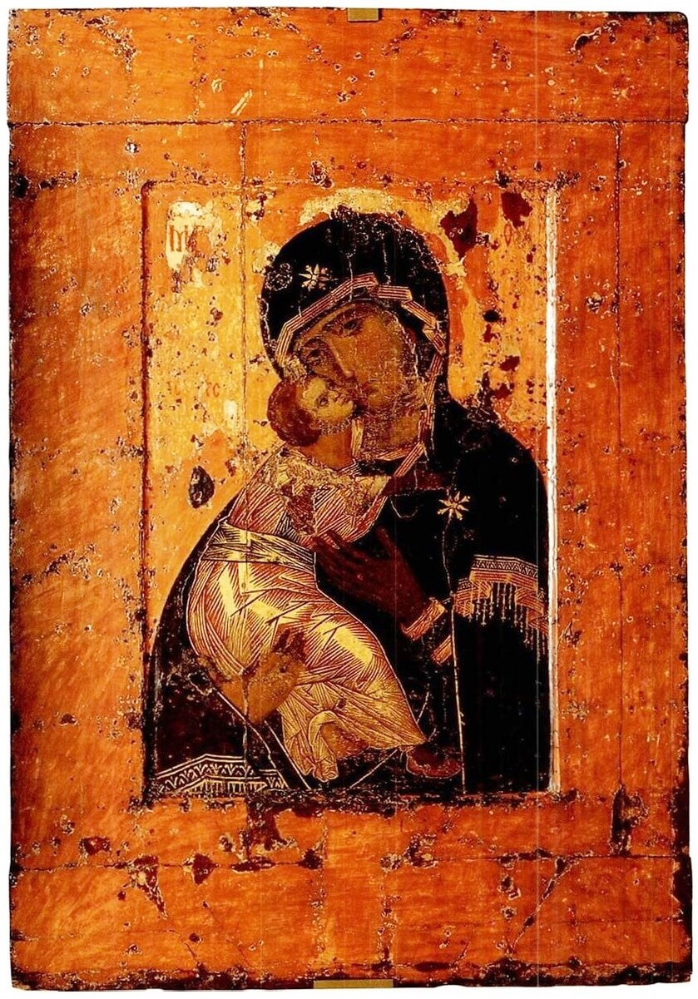 | 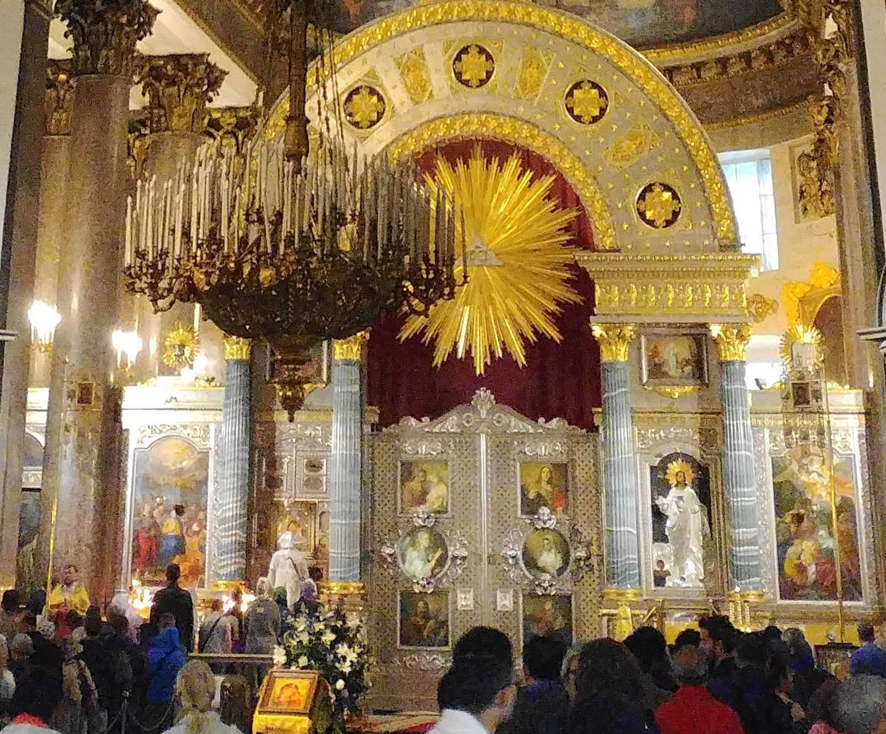 |
| 블라디미르의 성모, 12세기 비잔틴 제작, 모스코바 트레티야코프 미술관 | 상트페테르부르크 카잔성당 내부. 사진의 왼쪽에 기적의 이콘을 경배하기 위해 줄을 서 있는 사람들이 보인다. |
| 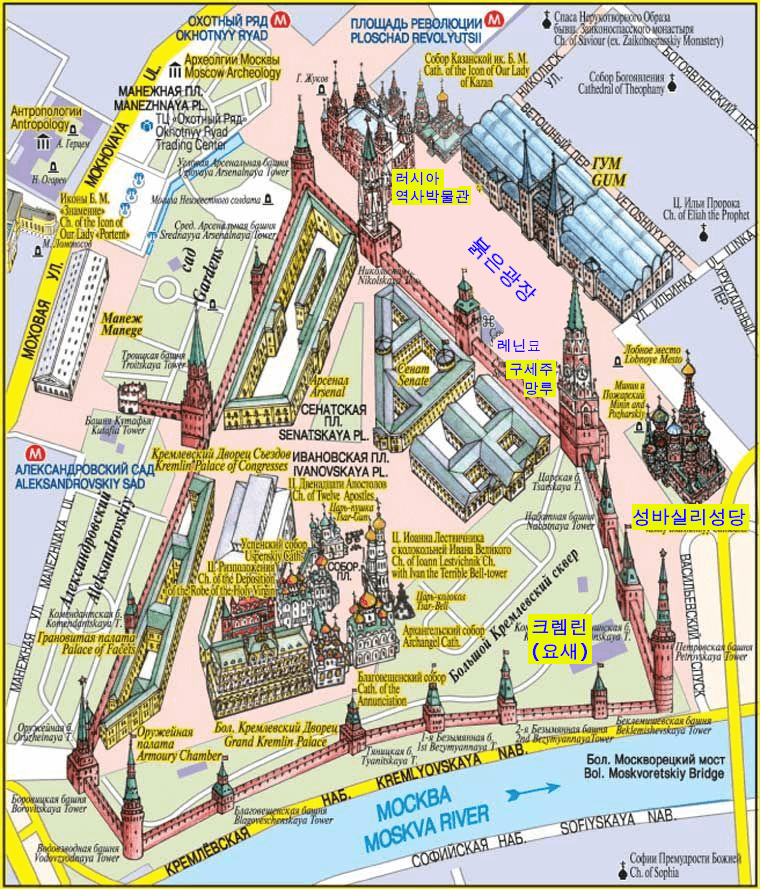 붉은광장 주변 안내도 | 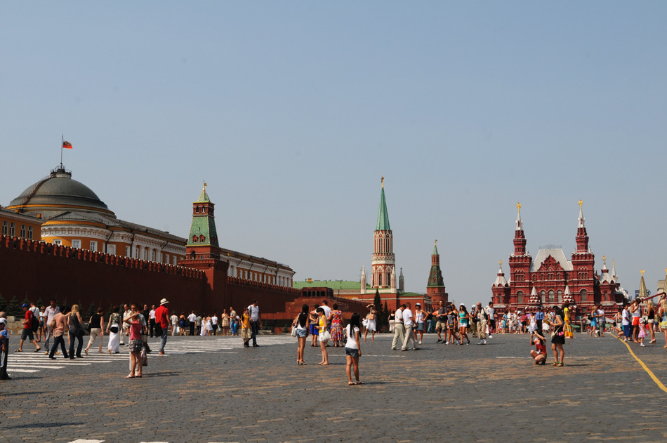 붉은 광장. 크렘린의 붉은 벽과 러시아 역사 박물관이 보인다 |
| 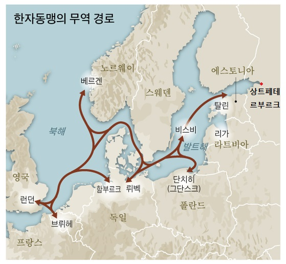 | 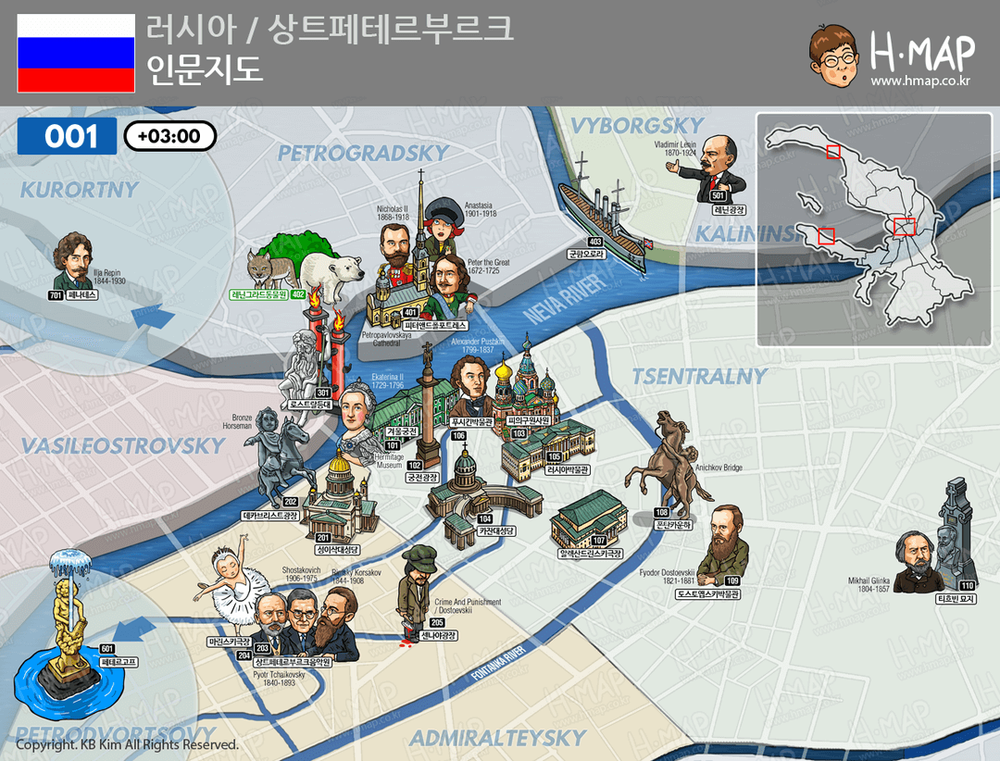 |
|
표트로 대제가 탐낸 발트해 항로 |
상트페테르부르크 지도 |
| 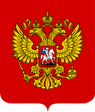 | 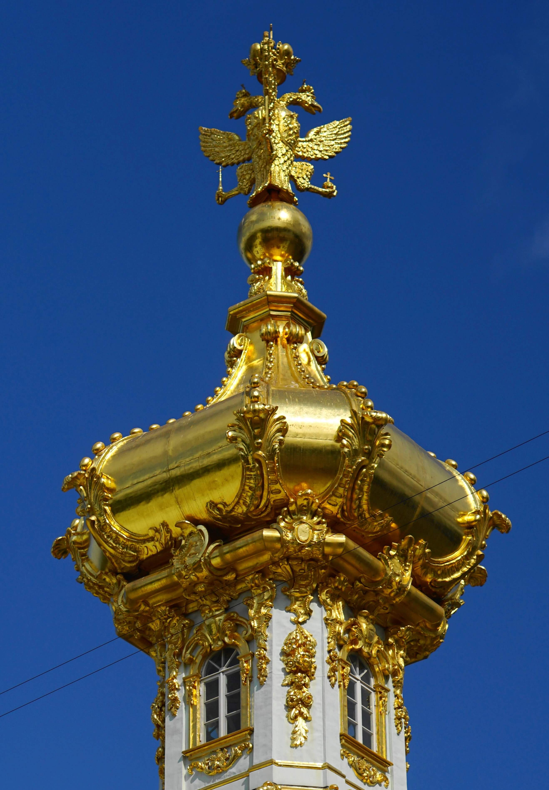 | 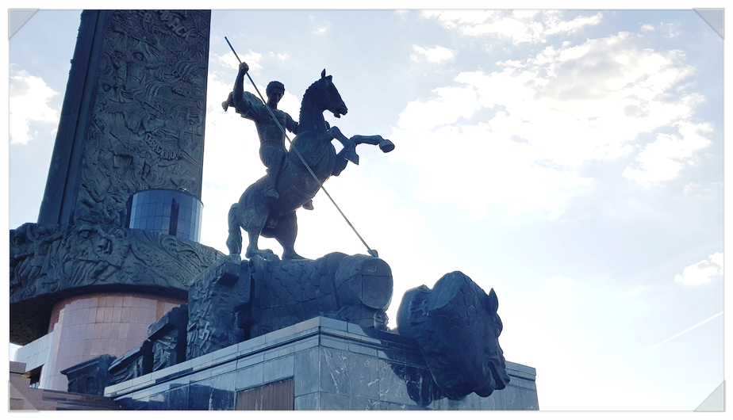 |
| 러시아의 국장 | 여름궁전 지붕위의 쌍두 독수리상 |
모스크바 승리 공원의 성 게오르기우스 |
| 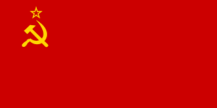 | 구 소련 국기. 낫과 망치는 농민을 상징한다 |